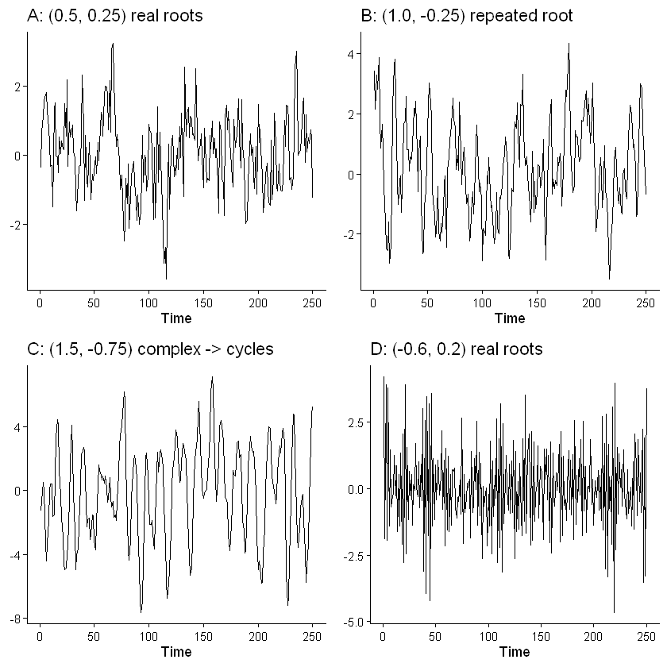
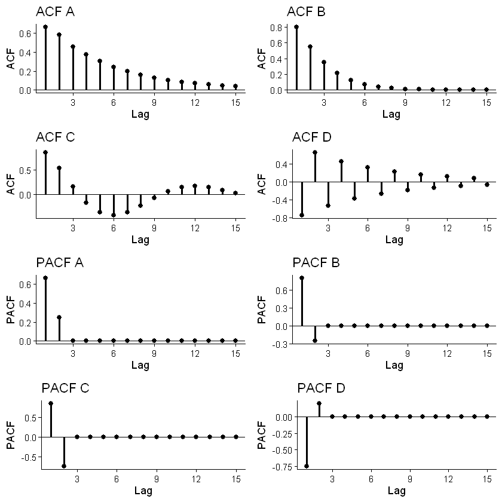
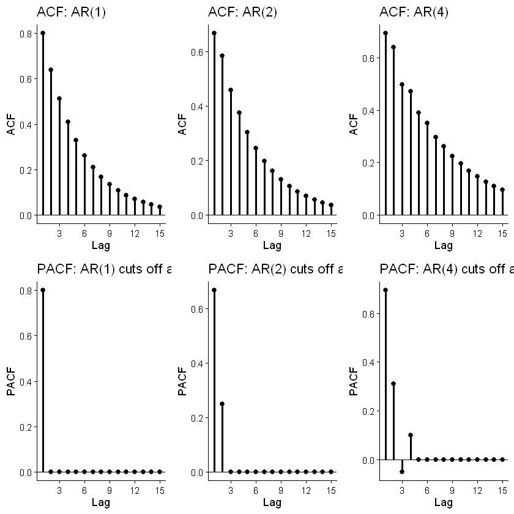
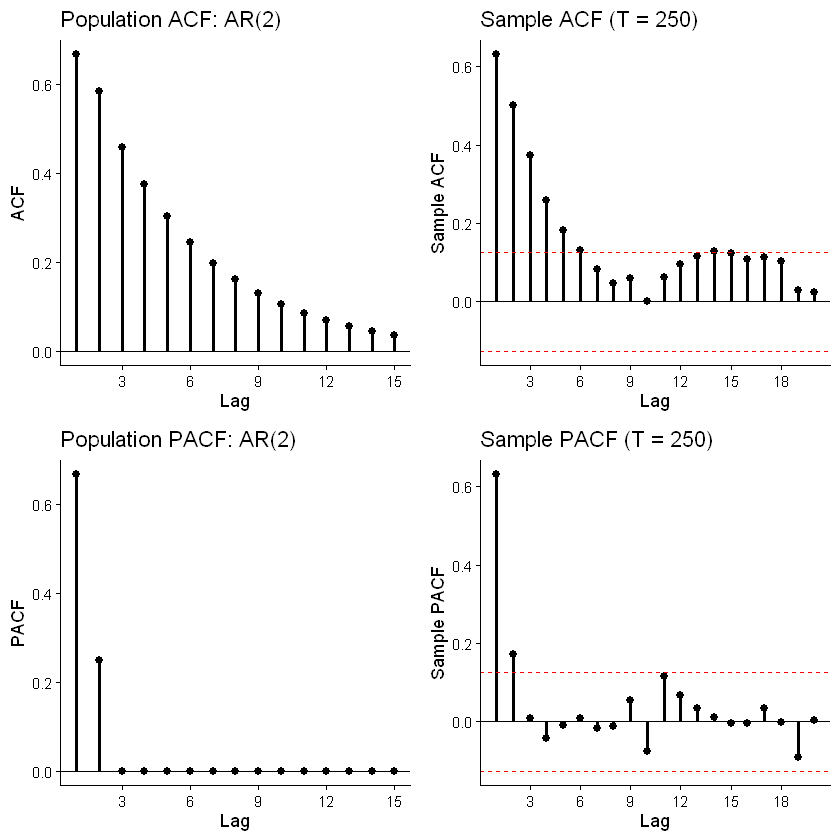
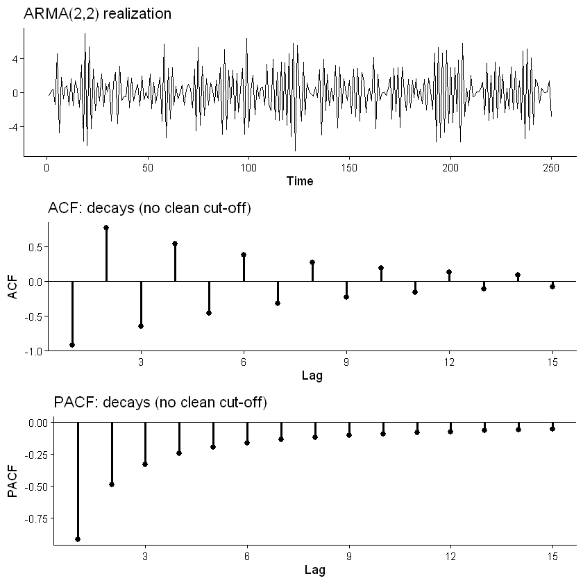

HS 821 · Lectures 6–8 · Topics in Time Series Econometrics
Sunil Paul
August 2026 · R 4.6
Lecture 5 built the probabilistic vocabulary of stationary processes — the mean, autocovariance and autocorrelation functions, white noise, the Wold decomposition, and the moving-average (MA) family whose ACF cuts off after the order of the process.
This lecture develops the two workhorse families that dominate applied univariate modelling: the autoregressive (AR) process, whose ACF decays rather than cuts off, and the mixed autoregressive–moving-average (ARMA) process. The unifying tool is the lag polynomial and its roots: stationarity, persistence, cycles, and invertibility can all be read off from where those roots sit relative to the unit circle.
Estimation and statistical inference (fitting \(\phi,\theta,\sigma^2\); standard errors; information criteria; diagnostic tests) are deferred to the next lecture. Here the parameters are known and every ACF, PACF, and impulse response is a population quantity, except where a figure is explicitly labelled as a sample correlogram.
Setup
As in Lecture 5 we first define a small set of plotting helpers so the later cells stay short. All theoretical quantities use base-R stats routines:
ARMAacf() — population ACF and PACF of an ARMA process;
ARMAtoMA() — the Wold / MA(\(\infty\)) coefficients \(\psi_j\) (the impulse response);
arima.sim() — one simulated realization;
polyroot() / eigen() — roots of the lag polynomial and eigenvalues of the companion matrix.
Show R code
# ------------------------------------------------------------------# Setup: plotting helpers (self-contained; theme_classic throughout)# ------------------------------------------------------------------suppressPackageStartupMessages({library(ggplot2)library(gridExtra)})# Time-series line plot; optional dashed reference line at the mean.ts_plot <-function(x, mu =NULL, title =NULL) { time_idx <-if (is.ts(x)) as.numeric(time(x)) elseseq_along(x) df <-data.frame(time = time_idx, value =as.numeric(x)) p <-ggplot(df, aes(time, value)) +theme_classic() +geom_line() +labs(x ="Time", y =NULL, title = title)if (!is.null(mu)) p <- p +geom_hline(yintercept = mu, linetype ="dashed") p}# Theoretical ACF of an ARMA process, lags 1..L (lag 0 dropped).acf_plot <-function(ar =numeric(0), ma =numeric(0), L =15, title =NULL) { rho <-ARMAacf(ar = ar, ma = ma, lag.max = L)[-1] df <-data.frame(lag =seq_len(L), acf =as.numeric(rho))ggplot(df, aes(lag, acf)) +theme_classic() +geom_hline(yintercept =0) +geom_segment(aes(xend = lag, y =0, yend = acf), linewidth =1) +geom_point(size =2) +scale_x_continuous(breaks =seq(0, L, by =3)) +labs(x ="Lag", y ="ACF", title = title)}# Theoretical PACF of an ARMA process, lags 1..L.pacf_plot <-function(ar =numeric(0), ma =numeric(0), L =15, title =NULL) { pac <-ARMAacf(ar = ar, ma = ma, lag.max = L, pacf =TRUE) df <-data.frame(lag =seq_len(L), pacf =as.numeric(pac))ggplot(df, aes(lag, pacf)) +theme_classic() +geom_hline(yintercept =0) +geom_segment(aes(xend = lag, y =0, yend = pacf), linewidth =1) +geom_point(size =2) +scale_x_continuous(breaks =seq(0, L, by =3)) +labs(x ="Lag", y ="PACF", title = title)}# Theoretical impulse response = Wold coefficients psi_0=1, psi_1, psi_2, ...irf_plot <-function(ar =numeric(0), ma =numeric(0), h =20, title =NULL) { psi <-c(1, ARMAtoMA(ar = ar, ma = ma, lag.max = h)) df <-data.frame(horizon =0:h, response = psi)ggplot(df, aes(horizon, response)) +theme_classic() +geom_hline(yintercept =0) +geom_segment(aes(xend = horizon, y =0, yend = response)) +geom_point() +scale_x_continuous(breaks =seq(0, h, by =4)) +labs(x ="Horizon after a unit innovation", y ="Response", title = title)}# Sample ACF / PACF with approximate +/- 2/sqrt(T) bands.sample_acf_plot <-function(x, L =20, title =NULL) { a <-acf(x, plot =FALSE, lag.max = L) df <-data.frame(lag =as.numeric(a$lag)[-1], acf =as.numeric(a$acf)[-1]) b <-2/sqrt(length(x))ggplot(df, aes(lag, acf)) +theme_classic() +geom_hline(yintercept =0) +geom_segment(aes(xend = lag, y =0, yend = acf), linewidth =1) +geom_point(size =2) +geom_hline(yintercept =c(b, -b), linetype ="dashed", colour ="red") +scale_x_continuous(breaks =seq(0, L, by =3)) +labs(x ="Lag", y ="Sample ACF", title = title)}sample_pacf_plot <-function(x, L =20, title =NULL) { a <-pacf(x, plot =FALSE, lag.max = L) df <-data.frame(lag =as.numeric(a$lag), acf =as.numeric(a$acf)) b <-2/sqrt(length(x))ggplot(df, aes(lag, acf)) +theme_classic() +geom_hline(yintercept =0) +geom_segment(aes(xend = lag, y =0, yend = acf), linewidth =1) +geom_point(size =2) +geom_hline(yintercept =c(b, -b), linetype ="dashed", colour ="red") +scale_x_continuous(breaks =seq(0, L, by =3)) +labs(x ="Lag", y ="Sample PACF", title = title)}# Roots of a lag polynomial on the complex plane, with the unit circle.roots_plot <-function(roots, title =NULL) { theta <-seq(0, 2* pi, length.out =400) circ <-data.frame(x =cos(theta), y =sin(theta)) df <-data.frame(Real =Re(roots), Imaginary =Im(roots),outside =ifelse(Mod(roots) >1, "outside", "inside"))ggplot() +theme_classic() +geom_path(data = circ, aes(x, y), colour ="grey55") +geom_hline(yintercept =0) +geom_vline(xintercept =0) +geom_point(data = df, aes(Real, Imaginary, colour = outside), size =3) +scale_colour_manual(values =c(outside ="black", inside ="red"),name =NULL) +coord_equal() +labs(x ="Real part", y ="Imaginary part", title = title)}
Unlike an MA process, where today’s value is a finite combination of recent shocks, an AR process feeds its own past back into itself. Substituting repeatedly gives the recursive (backward) solution
The second form is the natural starting point for forecasting; the first shows how the influence of the initial condition \(Y_0\) fades (or grows) as \(\phi^t\).
Reading an AR(1): dynamic multipliers and the impulse response
Because \(Y_t\) is a weighted sum of past shocks, we can ask exactly how much a single innovation matters, and for how long. The dynamic multiplier is the partial effect of a shock \(j\) periods ago:
Plotted against the horizon \(j\), the sequence \(\{\phi^{\,j}\}\) is the impulse response function (IRF) — these are exactly the Wold coefficients \(\psi_j=\phi^{\,j}\) from Lecture 5. The cumulative effect up to horizon \(j\) is
The ACF decays geometrically rather than cutting off — the defining contrast with an MA process. A convenient summary of persistence is the half-life, the horizon at which a shock’s effect has halved:
Replacing \(L\) by a complex variable \(z\) gives the characteristic polynomial\(1-\phi z\), whose root is
\[
z^\star=\frac{1}{\phi}.
\]
Stationarity requires the root to lie outside the unit circle, \(|z^\star|>1\), which is exactly \(|\phi|<1\). Inverting the operator as a geometric series reproduces the Wold form:
The “root outside the unit circle” statement and the “\(|\phi|<1\)” statement are the same condition. The root language is what generalises cleanly to AR(2) and AR(\(p\)).
Predict before you simulate
We simulate three stationary AR(1) processes with a common mean \(\mu=2\) (so the intercept is \(c=\mu(1-\phi)\)):
\(\phi=-0.7\) produces an oscillating ACF, \(\rho_j=(-0.7)^{\,j}\), alternating in sign as the series flips above and below the mean from period to period.
For every AR(1) the theoretical PACF cuts off after lag 1: \(\phi_{11}=\phi\) and \(\phi_{jj}=0\) for \(j>1\). This mirror-image of the MA case (ACF cuts off, PACF decays) is what makes the PACF the natural tool for identifying AR order.
The impulse response as persistence
The IRF \(\psi_j=\phi^{\,j}\) makes persistence visual: a bigger \(\phi\) means a slower-decaying response and a larger accumulated long-run effect \(1/(1-\phi)\).
Show R code
# Impulse responses: persistence rises with phi; phi<0 oscillatesp1 <-irf_plot(ar =0.8, h =20, title ="IRF: phi = 0.8 (long-run effect 5.0)")p2 <-irf_plot(ar =0.4, h =20, title ="IRF: phi = 0.4 (long-run effect 1.67)")p3 <-irf_plot(ar =-0.7, h =20, title ="IRF: phi = -0.7 (oscillating)")grid.arrange(p1, p2, p3, ncol =1)cat(sprintf("Long-run effect 1/(1-phi): phi=0.8 -> %.2f | phi=0.4 -> %.2f\n",1/(1-0.8), 1/(1-0.4)))cat(sprintf("Half-life ln(0.5)/ln(phi): phi=0.8 -> %.2f | phi=0.4 -> %.2f periods\n",log(0.5)/log(0.8), log(0.5)/log(0.4)))
From \(\rho_1,\rho_2\) onwards the ACF is generated by the same second-order recursion, so it decays (possibly with oscillations) rather than cutting off.
Stationarity: roots, the triangle, and complex roots
The nature of the dynamics depends on the discriminant \(\phi_1^2+4\phi_2\):
real distinct roots (\(\phi_1^2+4\phi_2>0\)): the ACF/IRF is a sum of two decaying geometric terms — monotone (or sign-alternating) decay;
complex-conjugate roots (\(\phi_1^2+4\phi_2<0\)): the ACF/IRF is a damped sinusoid — the process exhibits pseudo-cycles. The stochastic cycle has modulus \(r=\sqrt{-\phi_2}\) and period
All four sit inside the triangle, so all are stationary. Predict: which one shows regular cycles? (Check the discriminant \(\phi_1^2+4\phi_2\); model C has \(1.5^2+4(-0.75)=-0.75<0\).)
Show R code
# Four AR(2) realizationsset.seed(123)n <-250ar_A <-c(0.5, 0.25)ar_B <-c(1.0, -0.25)ar_C <-c(1.5, -0.75)ar_D <-c(-0.6, 0.2)y_A <-arima.sim(model =list(ar = ar_A), n = n)y_B <-arima.sim(model =list(ar = ar_B), n = n)y_C <-arima.sim(model =list(ar = ar_C), n = n)y_D <-arima.sim(model =list(ar = ar_D), n = n)grid.arrange(ts_plot(y_A, title ="A: (0.5, 0.25) real roots"),ts_plot(y_B, title ="B: (1.0, -0.25) repeated root"),ts_plot(y_C, title ="C: (1.5, -0.75) complex -> cycles"),ts_plot(y_D, title ="D: (-0.6, 0.2) real roots"),ncol =2)

Show R code
# Theoretical ACF and PACF of the four AR(2) processesgrid.arrange(acf_plot(ar = ar_A, title ="ACF A"), acf_plot(ar = ar_B, title ="ACF B"),acf_plot(ar = ar_C, title ="ACF C"), acf_plot(ar = ar_D, title ="ACF D"),pacf_plot(ar = ar_A, title ="PACF A"), pacf_plot(ar = ar_B, title ="PACF B"),pacf_plot(ar = ar_C, title ="PACF C"), pacf_plot(ar = ar_D, title ="PACF D"),ncol =2)

Reading the graphs
Every ACF decays toward zero; the decay pattern (monotone vs oscillatory vs cyclical) is governed by the characteristic roots.
Model C has complex roots and its ACF/series show clear damped cycles. Its inverse-root modulus is \(\sqrt{0.75}\approx0.87\) and \(\cos\theta=1.5/(2\sqrt{0.75})=0.866\), i.e. \(\theta=\pi/6\) and a period of \(2\pi/\theta=12\) — a cycle roughly every twelve periods.
In every case the PACF cuts off after lag 2: two nonzero partial autocorrelations, then zero. This is the AR(2) signature.
Show R code
# Confirm the cyclical period of model C from its characteristic rootsr_C <-polyroot(c(1, -ar_C[1], -ar_C[2])) # 1 - phi1 z - phi2 z^2cat("Model C characteristic roots (should be complex, outside unit circle):\n")print(r_C); cat("moduli:", round(Mod(r_C), 3), "\n\n")# Cycle from the *inverse* roots (eigenvalues of the companion matrix)lam <-1/ r_Cperiod <-2* pi /Mod(Arg(lam[1]))cat(sprintf("Inverse-root modulus r = %.3f, implied cycle period = %.1f periods\n",Mod(lam[1]), period))# Real vs complex roots also show up in the impulse responsegrid.arrange(irf_plot(ar = ar_A, h =24, title ="IRF A: real roots -> monotone decay"),irf_plot(ar = ar_C, h =24, title ="IRF C: complex roots -> damped cycle (~12)"),ncol =1)
Model C characteristic roots (should be complex, outside unit circle):
[1] 1+0.5773503i 1-0.5773503i
moduli: 1.155 1.155
Inverse-root modulus r = 0.866, implied cycle period = 12.0 periods
Factorising \(\phi(L)=\prod_{i=1}^{p}(1-\lambda_i L)\) and inverting each factor (valid when every \(|\lambda_i|<1\), i.e. every characteristic root is outside the unit circle),
an MA(\(\infty\)) whose coefficients \(\psi_j\) are the impulse response.
Companion form and the eigenvalue condition
Checking \(p\) polynomial roots by hand is awkward; the companion form turns the AR(\(p\)) into a first-order vector recursion whose stability is an eigenvalue problem. Stack the last \(p\) values,
The process is stationary iff all eigenvalues of \(F\) lie inside the unit circle, \(|\lambda_i|<1\). The eigenvalues of \(F\) are exactly the reciprocals of the characteristic roots, so “eigenvalues inside” and “roots outside” are the same statement. This companion/eigenvalue formulation is what carries over directly to VARs and state-space models later in the course.
Show R code
# Two equivalent stationarity checks for AR(2) model A: (0.5, 0.25)ar_A <-c(0.5, 0.25)# (i) roots of 1 - phi1 z - phi2 z^2 : want modulus > 1roots_A <-polyroot(c(1, -ar_A[1], -ar_A[2]))cat("Characteristic roots:", round(roots_A, 3), " | moduli:",round(Mod(roots_A), 3), "(outside unit circle)\n")# (ii) eigenvalues of the companion matrix F : want modulus < 1F_A <-rbind(ar_A, c(1, 0))eig_A <-eigen(F_A)$valuescat("Companion eigenvalues:", round(eig_A, 3), " | moduli:",round(Mod(eig_A), 3), "(inside unit circle)\n")cat("Reciprocal check 1/roots:", round(1/roots_A, 3), "\n")roots_plot(roots_A, title ="AR(2) model A: characteristic roots vs unit circle")
ERROR: Error in roots_plot(roots_A, title = "AR(2) model A: characteristic roots vs unit circle"): could not find function "roots_plot"
Error in roots_plot(roots_A, title = "AR(2) model A: characteristic roots vs unit circle"): could not find function "roots_plot"
Traceback:
4 The partial autocorrelation function (PACF)
For an AR(\(p\)) the ACF decays and never cleanly signals the order \(p\). The partial autocorrelation function solves this. The \(j\)-th partial autocorrelation is the correlation between \(Y_t\) and \(Y_{t-j}\)after removing the linear influence of the intervening lags:
The last coefficient in each regression, \(\phi_{jj}\), is the \(j\)-th PACF value: the extra explanatory power of \(Y_{t-j}\) once all shorter lags are included.
The identification duality. For an AR(\(p\)) the PACF cuts off after lag \(p\) while the ACF decays. For an MA(\(q\)) it is the mirror image: the ACF cuts off after lag \(q\) while the PACF decays. Reading the two together is the heart of Box–Jenkins identification.
Show R code
# ACF decays but PACF cuts off at the AR order: AR(1), AR(2), AR(4)set.seed(123)n <-250ar1 <-0.8ar2 <-c(0.5, 0.25)ar4 <-c(0.5, 0.3, -0.1, 0.1)grid.arrange(acf_plot(ar = ar1, title ="ACF: AR(1)"),acf_plot(ar = ar2, title ="ACF: AR(2)"),acf_plot(ar = ar4, title ="ACF: AR(4)"),pacf_plot(ar = ar1, title ="PACF: AR(1) cuts off at 1"),pacf_plot(ar = ar2, title ="PACF: AR(2) cuts off at 2"),pacf_plot(ar = ar4, title ="PACF: AR(4) cuts off at 4"),ncol =3)

Population versus sample correlogram
Every ACF/PACF above is a population quantity computed from known coefficients. In practice we see only one realization and estimate a sample ACF/PACF, which fluctuates around the truth inside approximate \(\pm 2/\sqrt{T}\) bands (dashed). The identification logic — “PACF cuts off at \(p\)” — must be read through that sampling noise. (The formal sampling distributions and tests belong to the estimation lecture.)
Predict: for a simulated AR(2), roughly how many sample PACF spikes should clearly exceed the bands?
Show R code
# Theoretical vs sample correlogram for one AR(2) realizationset.seed(2024)y_ar2 <-arima.sim(model =list(ar =c(0.5, 0.25)), n =250)grid.arrange(acf_plot(ar =c(0.5, 0.25), title ="Population ACF: AR(2)"),sample_acf_plot(y_ar2, title ="Sample ACF (T = 250)"),pacf_plot(ar =c(0.5, 0.25), title ="Population PACF: AR(2)"),sample_pacf_plot(y_ar2, title ="Sample PACF (T = 250)"),ncol =2)

5 Invertibility: the dual of stationarity
Just as a stationary AR can be written as an MA(\(\infty\)), an invertible MA can be written as an AR(\(\infty\)). Invertibility is the condition that makes the innovation recoverable from current and past observations — indispensable for forecasting and for a unique parameterisation (recall the MA(1) \(\theta\) vs \(1/\theta\) ambiguity from Lecture 5).
which converges iff \(|\beta|<1\), i.e. the root of \(1+\beta z=0\) lies outside the unit circle. More generally an MA(\(q\)) is invertible iff every root of
\[
1+\beta_1 z+\cdots+\beta_q z^q=0
\]
lies outside the unit circle.
This is the exact mirror of the AR stationarity condition: stationarity constrains the AR roots, invertibility constrains the MA roots.
Show R code
# Invertibility of an MA(2): Y_t = eps_t + 1.0 eps_{t-1} + 0.7 eps_{t-2}ma_roots <-polyroot(c(1, 1.0, 0.7)) # 1 + 1.0 z + 0.7 z^2cat("MA(2) roots:", round(ma_roots, 3), "\n")cat("moduli :", round(Mod(ma_roots), 3), " -> all > 1, so invertible\n")
MA(2) roots: -0.714+0.958i -0.714-0.958i
moduli : 1.195 1.195 -> all > 1, so invertible
Two invertible MA(2) processes: ACF cuts off, PACF decays
Predict: the ACF should cut off after lag 2 for both. The PACF should decay (monotone or oscillatory depending on the MA roots) rather than cut off — the reverse of the AR pattern.
Show R code
# Two MA(2) processes: realizations, ACF (cuts off at 2), PACF (decays)set.seed(123)n <-250ma_1 <-c(1.0, 0.7)ma_2 <-c(-1.2, 0.25)s1 <-2+arima.sim(model =list(ma = ma_1), n = n)s2 <-2+arima.sim(model =list(ma = ma_2), n = n)grid.arrange(ts_plot(s1, mu =2, title ="MA(2): theta = (1.0, 0.7)"),ts_plot(s2, mu =2, title ="MA(2): theta = (-1.2, 0.25)"),acf_plot(ma = ma_1, title ="ACF: cuts off after lag 2"),acf_plot(ma = ma_2, title ="ACF: cuts off after lag 2"),pacf_plot(ma = ma_1, title ="PACF: decays"),pacf_plot(ma = ma_2, title ="PACF: decays"),ncol =2)
The ACF decays geometrically at rate \(\phi\) after lag 1, but the first-lag value blends both the AR and MA parameters.
Parameter redundancy (common factors)
ARMA models are only identified if \(\phi(L)\) and \(\beta(L)\) share no common root. If they do, the common factor cancels and the model is over-parameterised. For example,
an “ARMA(1,1)” that is really white noise. This is why parsimony matters: before trusting an estimated ARMA(\(p,q\)), check that the AR and MA roots are not (nearly) cancelling. Near-common factors show up in practice as unstable estimates and are a standard reason to prefer a smaller model.
The AR coefficients reuse model D (stationary) and the MA coefficients reuse the second MA(2) above (invertible), so the process is both stationary and invertible. Predict: with \(p>0\) and \(q>0\), neither the ACF nor the PACF should cut off cleanly — both decay.
Show R code
# ARMA(2,2): stationary AR part (D) + invertible MA partset.seed(123)ar_arma <-c(-0.6, 0.2)ma_arma <-c(-1.2, 0.25)y_arma <-arima.sim(model =list(ar = ar_arma, ma = ma_arma), n =250)grid.arrange(ts_plot(y_arma, title ="ARMA(2,2) realization"),acf_plot(ar = ar_arma, ma = ma_arma, title ="ACF: decays (no clean cut-off)"),pacf_plot(ar = ar_arma, ma = ma_arma, title ="PACF: decays (no clean cut-off)"),ncol =1)

7 Identifying a model from the ACF and PACF
The ACF and PACF together fingerprint the model class. This table is the practical payoff of the whole lecture.
Process
ACF
PACF
White noise
zero at all lags \(>0\)
zero at all lags \(>0\)
AR(\(p\))
decays (monotone or oscillatory)
cuts off after lag \(p\)
MA(\(q\))
cuts off after lag \(q\)
decays (monotone or oscillatory)
ARMA(\(p,q\))
decays after lag \(q\)
decays after lag \(p\)
Sign patterns worth remembering
AR(1), \(\phi>0\): ACF is positive geometric decay; \(\phi<0\): ACF alternates sign. PACF is a single spike \(\phi_{11}=\phi\).
MA(1), \(\beta>0\): single positive ACF spike at lag 1; \(\beta<0\): single negative spike. PACF decays.
ARMA(1,1): geometric ACF decay after lag 1 with \(\operatorname{sign}(\rho_1)=\operatorname{sign}(\phi+\beta)\); PACF decays after lag 1.
Read together with the caveat from Section 4: with real data these patterns are seen through sampling noise, so identification narrows the field to a few candidate \((p,q)\) rather than pinning down one — the remaining choice is settled by estimation and diagnostics in the next lecture.
Key takeaways
You should now be able to:
solve an AR(1) and read persistence off the impulse response \(\psi_j=\phi^{\,j}\), the half-life, and the long-run effect \(1/(1-\phi)\);
state stationarity through the characteristic roots (outside the unit circle) and recover the Wold / MA(\(\infty\)) form;
compute AR(2) moments via Yule–Walker, place a model in the stationarity triangle, and explain how complex roots produce damped cycles of period \(2\pi/\arccos\!\big(\phi_1/2\sqrt{-\phi_2}\big)\);
write an AR(\(p\)) in companion form and check stationarity through the eigenvalues of \(F\);
define the PACF and use the ACF/PACF duality (AR: PACF cuts off; MA: ACF cuts off) to identify order;
explain invertibility as the MA-side mirror of stationarity;
describe ARMA(\(p,q\)) moments and ACF/PACF behaviour, and recognise parameter redundancy from common AR/MA roots.
Exercises
Exercise 1 — AR(1) moments and persistence
For \(Y_t=1+0.6Y_{t-1}+\varepsilon_t\) with \(\varepsilon_t\sim WN(0,\,4)\), find \(\mu\), \(\gamma_0\), \(\rho_1\), \(\rho_2\), the long-run effect of a unit shock, and the half-life. Sketch the ACF.
Exercise 2 — Stationarity from roots
For each process, write the characteristic polynomial, find its roots, and decide whether it is stationary: \[
Y_t=1.2Y_{t-1}-0.32Y_{t-2}+\varepsilon_t,
\qquad
Y_t=0.6Y_{t-1}+0.5Y_{t-2}+\varepsilon_t.
\]
Exercise 3 — The stationarity triangle
Using the conditions \(\phi_1+\phi_2<1\), \(\phi_2-\phi_1<1\), \(-1<\phi_2<1\), decide which of \((\phi_1,\phi_2)=(0.8,0.1)\), \((1.4,-0.5)\), \((0.3,0.8)\) are stationary. For the stationary ones, which have complex roots?
Exercise 4 — Cycles from complex roots
For \(Y_t=1.5Y_{t-1}-0.75Y_{t-2}+\varepsilon_t\), verify the roots are complex and show the implied cycle period is 12. What happens to the cycle’s amplitude over time, and why?
Exercise 5 — ACF and PACF signatures
Without computing anything, state whether the ACF and the PACF cut off or decay for: (a) MA(2); (b) AR(3); (c) ARMA(1,2); (d) white noise. Which pair of tools identifies each order?
Exercise 6 — Invertibility
Show that \(\beta=0.5\) and \(\beta=2\) (with suitable innovation variances) give the same MA(1) ACF. Which is invertible? Write the invertible one as an AR(\(\infty\)).
Exercise 7 — Parameter redundancy
Show that \((1-0.7L)Y_t=(1-0.7L)\varepsilon_t\) collapses to white noise. Why does this make the ARMA(1,1) parameters unidentified, and how would you spot the problem from estimated AR and MA roots?
Exercise 8 — Companion form
Write the companion matrix \(F\) for \(Y_t=0.9Y_{t-1}-0.2Y_{t-2}+\varepsilon_t\), find its eigenvalues, and confirm they are the reciprocals of the characteristic roots and lie inside the unit circle.
Suggested reading
Hamilton, J. D. (1994), Time Series Analysis, Chapters 1–3 (difference equations, lag operators, stationary ARMA processes and their moments; companion form).
Brockwell, P. J. and Davis, R. A., Introduction to Time Series and Forecasting, chapters on ARMA models, ACF/PACF, and invertibility.
Enders, W., Applied Econometric Time Series, chapter on stationary ARMA models and Box–Jenkins identification.
Hyndman, R. J. and Athanasopoulos, G., Forecasting: Principles and Practice, chapters on autoregressive, moving-average, and ARIMA models for a computational treatment.